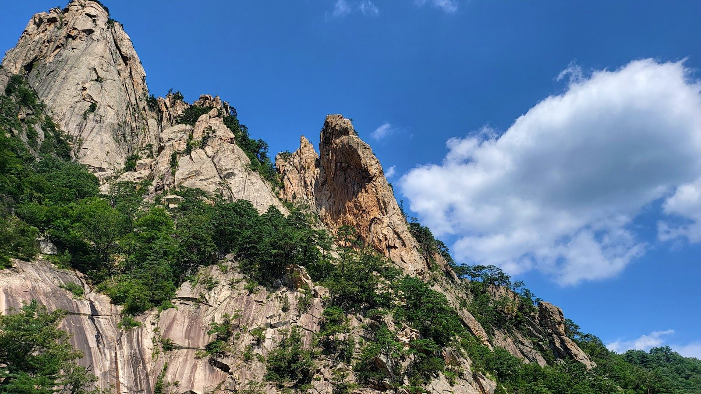

Sokcho · Leisure
Biseondae Peak: Seoraksan’s Scenic Rock Terrace
By Korea Plainly · Published

Photo: Sun Chul Kim via Google Maps
At a glance: Biseondae is a striking rock terrace beside a mountain stream, reached by a rewarding walk into Seoraksan National Park.
Visiting Biseondae Peak
- Region
- Sokcho
- Address
- Seoraksan Buk-myeon, Inje-gun
- Google rating
- 4.6/5 from 1,808 reviews (October 2026)
Opening hours, prices and closures change. Check the map before you go.
What Biseondae is
Despite the English name “Biseondae Peak,” Biseondae is best understood as a broad rock terrace in Seoraksan National Park, not a mountain summit. The name is often associated with the image of fairies descending to rest on the rocks. Here, the Cheonbuldong Valley narrows around the stream, with steep slopes and rugged granite shaping a dramatic natural scene.
The walk to Biseondae is a popular way to experience Seoraksan without committing to a summit hike. You follow a mountain path through forest and along the water, with rocky scenery appearing as you go. The destination itself is a place to pause, take in the valley and enjoy the scale of the surrounding peaks. Biseondae has a Google rating of 4.6 from 1,808 reviews.
What to see and do
Make the walk part of the experience. The route passes through changing views of trees, cliffs and clear-running water, and the sound of the stream accompanies much of the way. At Biseondae, look up at the steep rock walls as well as down at the water and boulders. The contrast between the open rock and the wooded valley is a highlight, especially when the light reaches into the gorge.
Take a breather at the terrace, but stay on marked paths and respect any barriers. Wet stone can be slippery, and mountain weather can change quickly. If you are a strong hiker, trails continue beyond Biseondae toward higher terrain, including routes for experienced walkers. Treat those as a separate, more demanding outing: reaching Biseondae does not mean you have reached a summit.
Bring a camera, but leave time to look around without a screen. This is a natural setting, not a viewpoint with a single framed photo spot. Keep your voice low near other walkers, carry out any rubbish, and do not disturb plants or wildlife.
Planning your visit
Allow several hours for the walk and return, with extra time if you like frequent photo stops or plan to explore more of the park. The exact pace depends on your fitness, footwear and how long you linger at the stream. Start early if you prefer a quieter walk and want more flexibility in your day. Weekends and popular foliage periods can bring more visitors, so expect a livelier trail then.
Spring and summer bring leafy forest and the sound of flowing water; autumn draws visitors for changing colors across the mountain slopes. In winter, snow and ice can make walking more difficult, so check trail conditions before setting out and follow park instructions. Wear comfortable shoes with good grip, bring water, and carry a light layer even when the day begins warm.
Biseondae fits well into a broader visit to Seoraksan. You can pair the walk with a stop at Sinheungsa Temple, another well-known destination in the park, or explore other sights around the main visitor area. If you are planning a longer day, choose your priorities in advance rather than trying to fit several strenuous trails into one visit. From Sokcho, Seoraksan is a natural outdoor escape from the city’s beaches, markets and seafood restaurants.
Good to know
Check the park’s current trail notices before you go; access can change with weather or safety conditions. Stay on designated routes, and turn back if conditions feel beyond your comfort level. The trail is a mountain walk rather than a paved city promenade, so expect uneven surfaces and some uphill sections. Bring a small bag for your rubbish, and avoid feeding wildlife.
For navigation, use “Biseondae” or “Biseondae Rock” in your map app and confirm that your route leads into Seoraksan National Park. The wider park has several entrances and trail areas, so check your starting point before leaving. If you are visiting with someone who prefers a short, gentle stroll, agree on a comfortable turnaround point instead of assuming everyone will want to continue to the rocks.
FAQ
Is Biseondae a peak?
No. Despite the English name, Biseondae is a rock terrace beside a stream in Seoraksan National Park, not a summit.
How long should I allow for a visit?
Allow several hours for the walk there and back, with additional time for breaks or other stops in the park.
Can beginners visit Biseondae?
Many visitors choose the walk as an introduction to Seoraksan, but it is still a mountain trail with uneven ground and uphill sections. Wear sturdy shoes and walk at a pace that feels comfortable.